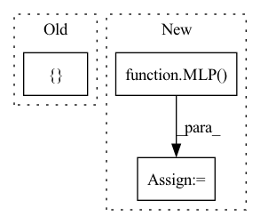

Pattern ID :594

Before Change
// self.sa3_module = _SetAbstractionModule(0.25, self.config["r3"], _MLP([128 + 3, 128, 128, 128]))
// self.sa4_module = _SetAbstractionModule(0.25, self.config["r4"], _MLP([128 + 3, 128, 128, 256]))
// self.sa_last_module = _GlobalSetAbstractionModule(_MLP([256 + 3, 256, 512, 1024]))
self.sa_last_module = _GlobalSetAbstractionModule(MLP([3, 256, 512, 1024]))
self.lin = nn.Linear(1024, out_size)
After Change
self.config = {"r1": 0.3, "r2": 0.4, "r3": 5, "r4": 7} // defaults for this net
self.config.update(config) // from input
self.sa1_module = _SetAbstractionModule(0.2, self.config["r1"], MLP([3, self.config["EConv_hidden"], self.config["EConv_hidden"], self.config["EConv_feature"]]))
// self.sa2_module = _SetAbstractionModule(0.25, self.config["r2"], MLP([112 + 3, 200, 200, 112]))
// self.sa3_module = _SetAbstractionModule(0.25, self.config["r3"], MLP([128 + 3, 128, 128, 128]))
// self.sa4_module = _SetAbstractionModule(0.25, self.config["r4"], MLP([128 + 3, 128, 128, 256]))
In pattern: SUPERPATTERN
Frequency: 3
Non-data size: 3
Instances
Fragment ID: 1543829
Project Name: maria-korosteleva/garment-pattern-estimation
Commit Name: f968893c30485d64366c85055b379f24bacd8618
Time: 2021-01-20
Author: mariako@kaist.ac.kr
File Name: nn/net_blocks.py
Class Name: PointNetPlusPlus
Method Name: __init__
Parent Class: nn.Module
Fragment ID: 1543828
Project Name: bwittmann/transoar
Commit Name: 93490790c06b3fe20dfd1eae015b8d79f8fd627a
Time: 2022-05-25
Author: bastian.wittmann@tum.de
File Name: transoar/models/necks/focused_decoder.py
Class Name: FocusedDecoder
Method Name: __init__
Parent Class: nn.Module
Fragment ID: 1543826
Project Name: cherrypiesexy/imitation_learning
Commit Name: d3dbcfd6f84f83aa4be338202b6b4c22d8cdd13a
Time: 2021-01-29
Author: interga@post-hardcore.ru
File Name: algorithms/nn/actor_critic.py
Class Name: ActorCriticTwoMLP
Method Name: __init__
Parent Class: nn.Module